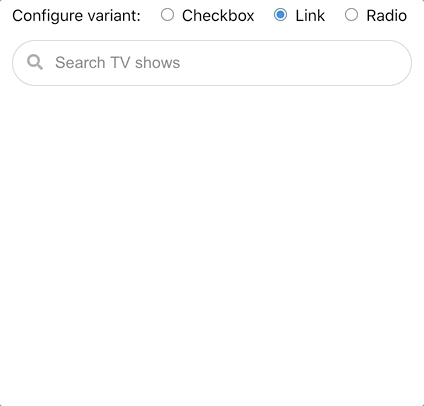

react-search-panel
Search that expands into real choices.
A TypeScript React component for expandable, Google-style search results as links, radios, or multi-select checkboxes—with optional chips, loading and clear states, and React 18/19 support.
